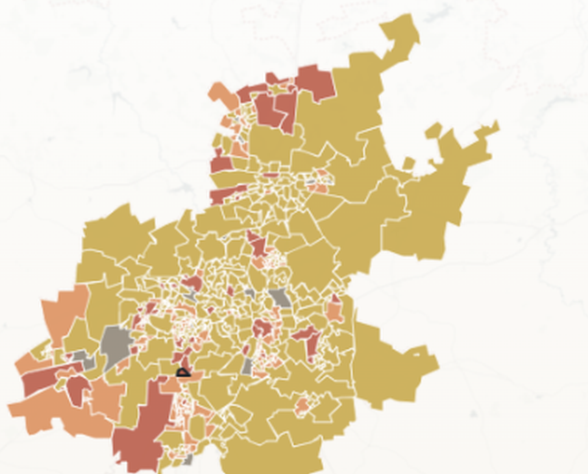

Spatial frame
A place-based governance reading of Gauteng, moving from broad urban region to ward-level response patterns.
Live showcase · Spatial intelligence
Beyond the Dashboard: Mapping Voice, Friction, and Public Response
This interactive page uses GCRO Quality of Life data and a ward-level Gauteng map to explore where governance pressure is being channelled through public voice, where it is blocked, and where lower mobilisation may hide weaker communication, thinner response pathways, or quieter institutional fragility.
Core question
Where is pressure channelled, where is it blocked, and where
does low mobilisation risk being misread as stability?
Demonstration case
Gauteng, using GCRO Quality of Life Survey data as a live
demonstration of a method other cities could adapt.
Current status
The showcase is live, public, and ready to use as a working
demonstration of place-based governance interpretation.